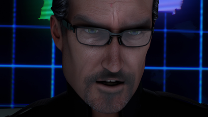
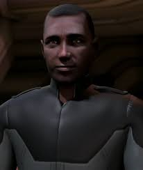
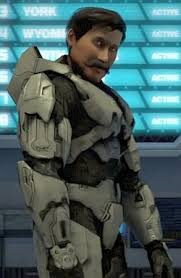
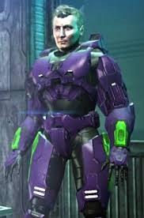
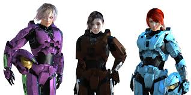

Seasons 9 and 10 goes back-and-forth between the past and the present. In the past, we see the Freelancers when Project Freelancer was still operational and its eventual downfall. In the present, we see that another Freelancer named Carolina has come and wants the Reds and Blues to help her find and kill the Director of Project Freelancer. It is also in these teo seasons that really explains any Freelancers that we have met and others that we might have heard about.
    Faces of Freelancer
Faces shown include The Director, The Counselor, York, Wyoming, North, South, CT, and Carolina.
Project Freelancer Members
- The Director - Real name is Dr. Leonard Church and is the source of the Alpha AI. He is also the husband of the late Allison Church and father to Carolina.
- The Counselor - Adian Price, he is the one who helps the Freelancers and knows everything about them.
- Maine - White armor with a secondary color changing. He eventually becomes the Meta.
- York - Gold with silver trim, he was paired with Delta. While he is good at lock-picking and blind in one eye, he's also in love with Carolina.
- Wyoming - With white armor, he was paired with Gamma. He likes knock-knock jokes.
- North Dakota and South Dakota (North and South for short) - With different shades of purple armor with green trim, they are twins. Out of the two, North is the only one to get an AI: Theta.
- CT - Brown armor, she defects from Project Freelancer to join the resistance. Texas ends up killing her.
- Wash - The former Project Freelancer Agent Washington, Wash wears black and yellow armor (but was cobalt and yellow at one point). He doesn't like having an AI in his head after an accident during his Freelancer days, but he becomes the de facto leader of Blue Team when Church was no longer leading Blue Team. "Now if you'll excuse me I need to go blow up this dead body." - Wash
- Carolina-Former member of Project Freelancer, Carolina wears cyan armor. She currently leads Blue Team and is actually the best fighter out of both teams. While things from her past have troubled her, she has learned to be more of a teammate than a leader with the Blues. "Call me sweetie again, and there's going to be a knife inside of you." - Carolina